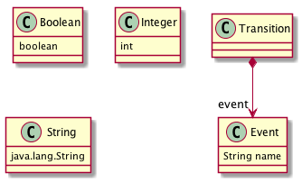

Note: the contents of this README file are formatted in markdown. Feel free to change the extension .txt to .md and render it in HTML format in a markdown editor of your choice. The compiled version of the document in HTML has been included as well, facilitating the rendering of images.
Invoke the tool by providing the metamodel specifications:
tool.isOclConstrainedSubtypeOf(
sMMPath, // path to subtype EMF metamodel (.ecore)
sOcl, // string containing OCL constraints for the metamodel above
tMMPath, // path to supertype EMF metamodel (.ecore)
tOcl // string containing OCL constraints for the metamodel above
)
The tool will determine whether (sMMPath,sOcl) denotes a model subtype of the model type denoted by (tMMPath,tOcl). This use case is illustrated below, in Section Subtyping. Note that any of the sets of OCL constraints may be empty (with the empty string "").
If the check fails, there are two main sources of incompatibilities: the model types denoted by the metamodels, and the OCL constraints.
tMMPath that are not extended by classes of sMMPath. That information is useful to assess the advantage of, for example, prunning the supertype metamodel by computing the effective metamodel w.r.t. a specific model management operation.sMMPath w.r.t. tMMPath in the form of a model represented in EMF notation (that is in XMI format), that invalidates a constraint in tOcl.If the check succeeds, the tool guarantees that (sMMPath,sOcl) is a structural refinement of (tMMPath,tOcl). Hence, any EMF model management operation that is defined for (sMMPath,sOcl) can be safely applied to models of (tMMPath,tOcl). Going one step further, the tool also facilitates the reuse of such operation by automatically synthesizing an extension metamodel that can be substituted for tMMPath in the signature of the operation ensuring its application to models conforming to (sMMPath,sOcl) without any further change. This use case is illustrated with a scenario below, in Section [Reuse of Model Management Operations](#Reuse of Model Management Operations).
This document explains how to download and configure a tool for testing structural model subtyping for metamodel specifications in MDE and for reusing (EMF) model management operations. The contents of the archive are as follows:
The tool has been tested macOS 10.12.4 (Sierra) and Linux Ubuntu 15.04 (Vivid Vervet). A VirtualBox image with Linux Ubuntu 15.04 is available, as explained below.
The base technology that is required to run the tool is as follows:
If, in addition, you want to work from within Eclipse Oxygen (Modelling Package), you will need:
https://github.com/mde-subtyping/web.git.subtyping.tests in your git repository.Overwrite existing Eclipse project descriptors?, choose Overwrite.After that explore the test cases under src/test/groovy, which can be run as JUnit test cases.
Follow the [numbered steps used on macOS](#Inspecting the test cases on macOS), and then
In each of the packages under the folder src/test/resources, edit the file subtyping.properties and change the following parameters as follows:
maude.os=OS_LINUX maude.maudePath=src/test/resources/maude/maude.linux64
Please check that the file src/test/resources/maude/maude.linux64 is executable, or else modify the corresponding access permissions using chmod.
After that explore the test cases under src/test/groovy, which can be run as JUnit test cases.
In the following subsections, we provide the examples used to illustrate the core contributions in the paper.
The usual structure of a test exercising the subtyping operation is as follows:
Load the configuration properties for the solver (an example can be found here) indicating where Maude is stored and the bounds to be used by the model finder:
SolverProperties.loadPropertiesFile(propFilePath)
Create an instance of the tool and configure it:
def ModelTypeUtils tool = new ModelTypeUtils()
// whether the software artifacts involved in solution (reuse metamodel, complement metamodels, etc) are to be persisted
tool.persistent=true
// folder where software artifacts will be stored
tool.outputPath="src/test/resources/emf/model/type/sm/generated/"
// whether to use multiple subtyping or strict subtyping
tool.multipleInheritance = false
Invoke the tool by providing the metamodel specifications:
tool.isOclConstrainedSubtypeOf(
sMMPath, // path to subtype EMF metamodel (.ecore)
sOcl, // string containing OCL constraints for the metamodel above
tMMPath, // path to supertype EMF metamodel (.ecore)
tOcl // string containing OCL constraints for the metamodel above
)
In this section, we show the expressivity of our structural subtyping operation (without OCL constraints) with respect to model typing [^Steel07] [^Guy12]. We compare our approach to model subtyping by considering their example with the following state machines:
[^Steel07]: Jim Steel, Jean-Marc Jézéquel. On model typing. Software and Ssytem Modeling 6, 4 (2007), 401-413. [^Guy12]: Clement Guy, Benoît Combemale, Steven Derrien, Jim Steel, Jean-Marc Jézequel. On Model Subtyping. ECMFA 2012. 400-415.
where changes have been highlighted.
The test cases implementing the subtyping checks can be found here and the results are summarized in the following table:
| subtypeOf | sm1 | sm2 | sm3 | sm4 | sm5 | |--|--|--|--|--|--|--| | sm1 | true | true | false | false | false | | sm2 | false | true | false | false | false | | sm3 | true | true | true | false | false | | sm4 | true | true | false | true | false | | sm5 | true | true | false | false | true |
In this section, we use the main example of the paper for illustrating how multiple typings can be applied to a metamodel at the classifier level, that is, a class of the subtype metamodel can be typed by more than one class in the supertype metamodel. The generalization of multiple typing at the metamodel level is supported by providing an extension metamodels for each different metamodel. However, as each such extension metamodel is linked to a different metamodel, which is usually defined for a given model management operation, we restrict ourselves to an example with one single model management operation.
In the example, we are using the metamodel specifications depicted below for defining graphs (metamodel and OCL constraints) and deterministic state machines (metamodel and OCL constraints), resp. The model types described by both metamodels are structurally similar in that they both describe languages of graphs.

On the one hand, the top metamodel specification characterizes the graph of a function defined over nodes. On the other hand, the bottom metamodel specification characterizes deterministic state machines where transitions can be triggered by an event (indicated in the name attribute of the transition) or are triggerless, e.g. they are completion transitions.
These test cases show how to use the tool to check that the state machine metamodel specification denotes a model subtype of the one denoted by the graph metamodel:
Moreover, if we consider non-deterministic state machines by removing the OCL constraint defining the deterministic condition from the state machine metamodel specification as instructed in this test case (test_singleInheritance_isSubtypeOf_inconsistent) we obtain a non-deterministic state machine that does not satisfy the graph constraint, which is represented in object diagram notation as follows:

The counterexample in generated in the folder temp/model, where temp is the temporary folder specified in the corresponding subtyping.properties file. The counterexample is a model conforming to the virtual metamodel and can be casted down to the subtype as explained in the sections below.
This last example also illustrates that the use of well-formedness constraints is optional in our tool. Additionally, these test cases demonstrate the usage of the possible combinations of OCL constraints with metamodels for checking structural subtyping.
In this section, we are going to show how to reuse a model management operation - in this case, a model-to-text transformation with ATL - for a modified version of the state machine metamodel. In this scenario, we discuss how to use the tool to reuse an ATL model transformation defined for a metamodel v1 for models of a metamodel v2 when the metamodel v1 is not exactly a supertype of the metamodel v2. In addition, we illustrate that the ATL model transformation can be applied even if a model is only partially typed by the metamodel involved in the ATL transformation.
The steps involved in this scenario relating to our tool are fully automated in the test case test_evolution_scenario. The steps that require interaction with ATL need to be carried out manually though.
Initial state machine metamodel (version 1):

We have developed an ATL transformation that serializes a state machine conforming to the previous metamodel into the format proposed by Martin Fowler:
query SM2Text = sm!StateMachine.allInstances()
->asSequence()
->first().compile().println();
helper context sm!StateMachine def: compile() : String =
'events\n' +
self.edges->iterate(e; acc : String = '' | acc + ' ' + e.name + '\n') +
'end\n\n' +
self.nodes->iterate(n; acc : String = '' | acc + n.compile() );
helper context sm!State def: compile() : String =
'state ' + self.name + '\n' +
sm!StateMachine.allInstances()->first().edges->iterate(e; acc : String ='' |
if (e.source.name=self.name) then
' ' + e.name + ' => ' + e.target.name + '\n'
else
''
endif
) +
'end\n\n';
This operation maps the state machine:

into
events
a->b
end
state a
a->b => b
end
state b
end
In an update of our DSL for state machines, a concept Event is added as an explicit class and the concept Observation is removed, producing a new metamodel (version 2):

with the following constraint, ensuring the consistency of event names:
context Transition
inv event_consistency:
not(self.event.oclIsUndefined) implies self.name=self.event.name
For which we can define state machines as follows:

The questions that we address next are:
Our subtyping operation assists us in determining that the version 2 of the metamodel together with the OCL constraint is a refinement of version 1 as shown in this test case, which is not due to the removal of the Observation concept. By looking at the generated binding file and at completement of the supertype metamodel (shown below), the modeller has information to find out that the source of the problem.

To see if there exists a potential valid refinement for reusing the operation, the user can extract the effective metamodel for the ATL transformation, either:
Our tool provides a facility for prunning a metamodel given the relevant features. The computed effective metamodel is as follows:

The subtyping operation is used again to check whether the effective metamodel is a valid supertype for our metamodel (version 2), which is correct.
The subtyping operation also synthesizes:
s
That can be used to rewrite the signature of the model management operation. In addition, as the subtyping operation had to apply some automatic renamings in order to avoid name clashes, we have to adapt the original model that conforms to version 2 to the extension metamodel as shown in the test case test_evolution_scenario. This operation retypes the objects in the original model according to the renamings inferred by the subtyping operation:
This model can be processed by the ATL transformation, after replacing the original metamodel with the synthesized extension metamodel. Note that the adaptation of the model is only mandatory when the set of class names in version 1 and the set of class names in version 2 are not disjoint.
In case the renamings applied to the subtype metamodel in the extension model make the object type names different from those in the original subtype metamodel, the tool facilitates an adaptation from the extended metamodel to the original metamodel as shown in the test case (testRetype_smEvent_asOriginal).
In this example, we are considering the reuse of an ATL transformation used in the paper for simulating deterministic state machines stepwise by using an ATL transformation that applies a function graph to a node. The difference with the evolution example is that the simulation example generates new elements in the transformation, which are automatically re-typed in our approach, illustrating how dynamic typing is supported.
The steps in the scenario described below have been implemented in the test case test_simulation_scenario. The resources used in the scenario are reachable from the implementation of the test case.
with the well-formedness constraints
context Edge inv map: not(Edge.allInstances()->exists(e | e.source=self.source and e.target<>self.target ))
The ATL transformation, shown below, applies a marking to the nodes of the graph by following the order imposed by the edges of the function graph.
module simulation; create OUT : graph refining IN : graph;
rule simulate { from n1 : graph!State ( n1.mark.oclIsUndefined() and graph!Transition.allInstances()->exists( e | e.target=n1 and not e.source.mark.oclIsUndefined()) ) to n2 : graph!State ( mark <- m ), m : graph!Observation ( graph <- n1.graph, time <- graph!Transition.allInstances()->select( e | e.target=n1 and not e.source.mark.oclIsUndefined())->asSequence()->first().source.mark.time + 1 ) }
An initial graph and the resulting graphs from applying the transformation twice, that is once to the input model and a second time to the model generated after step 1, would be as follows:

In these models, we have obliterated the root object Graph.
As discussed in the paper, the ATL transformation could be applicable to deterministic state machines to facilitate their simulation. The state machine metamodel that we are considering is

with the well-formedness constraints
context Transition
inv determinism:
not(Transition.allInstances()->exists(t |
t.source=self.source
and
t.target<>self.target
))
To reuse the ATL transformation, we use the subtyping operation to obtain the reuse metamodel:

In addition, we can check that the complement of the supertype metamodel only contains datatypes, indicating that all the supertype classifiers are covered by the subtyping relation and, hence, that the metamodel graph is indeed a supertype of the deterministic state machine metamodel specification.
And that the complement of the subtype metamodel contains the references initial, final and subMachines between the classes State and StateMachine, indicating

To reuse the ATL transformation for the state machines, the model representing the state machine needs to be re-typed to the extension metamodel, obtaining a model conforming to the extension metamodel, to which the ATL transformation can be applied. After applying the ATL transformation, another model conforming to the extension metamodel is obtained where concepts from the supertype may have been created (as Mark). A second re-typing is necessary in order to ensure that the produced model conforms to the original state machine metamodel. This process is illustrated as follows:

As discussed in the paper, the subtyping relation must be strict in order for the re-typing to work automatically.
MIT License
Copyright (c) 2017 Artur Boronat
Permission is hereby granted, free of charge, to any person obtaining a copy of this software and associated documentation files (the "Software"), to deal in the Software without restriction, including without limitation the rights to use, copy, modify, merge, publish, distribute, sublicense, and/or sell copies of the Software, and to permit persons to whom the Software is furnished to do so, subject to the following conditions:
The above copyright notice and this permission notice shall be included in all copies or substantial portions of the Software.
THE SOFTWARE IS PROVIDED "AS IS", WITHOUT WARRANTY OF ANY KIND, EXPRESS OR IMPLIED, INCLUDING BUT NOT LIMITED TO THE WARRANTIES OF MERCHANTABILITY, FITNESS FOR A PARTICULAR PURPOSE AND NONINFRINGEMENT. IN NO EVENT SHALL THE AUTHORS OR COPYRIGHT HOLDERS BE LIABLE FOR ANY CLAIM, DAMAGES OR OTHER LIABILITY, WHETHER IN AN ACTION OF CONTRACT, TORT OR OTHERWISE, ARISING FROM, OUT OF OR IN CONNECTION WITH THE SOFTWARE OR THE USE OR OTHER DEALINGS IN THE SOFTWARE.
Our tool reuses (adapting and extending) the following third-party tools as libraries: